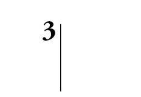
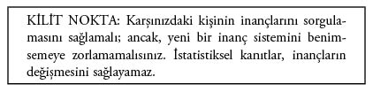
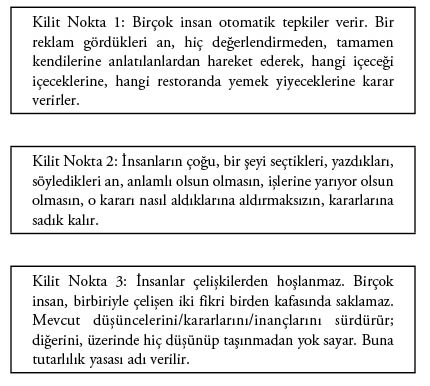

İnançları Değiştirmeye Yönelik Gizli Stratejiler
Bir önceki bölümde inançların tutkal gibi yapışıp kalmasını ele alarak, insanları “hayır”dan “evet”e taşıyacak bazı stratejiler öğrendik. Bu bölümde, yapışıp kalan inançları değiştirmeye yönelik stratejileri incelemeye devam edeceğiz.
Seçenek Takıntısı
Bir satış sonrası yaşanabilecek üç kötü şey vardır:
Birini hepimiz biliyoruz: Müşterinin Pişman Olması.
Bir diğerini anlatmıştım: Pişmanlık Beklentisi.
Sonuncudan hiç söz etmemiştim: Seçenek Takıntısı.
Size, bu şekilde devam etmeniz durumunda, bunların gelirlerinizi nasıl (ve neden) dramatik şekilde düşüreceğini göstereceğim. Bu üç deneyimi ortadan kaldırmanın, satış üstüne satış yapmanın, en önemlisi de müşteriyi kaybetmemenin yollarını anlatacağım... Hem de sonsuza dek.
Bir kadını ele alalım. Önünde iki iyi seçenek duruyor. (Yaşamınızı ve satış kariyerinizi değerlendirdiğinizde, seçenek takıntısı konusunun da, tam da bunun hakkında olduğunu göreceksiniz.)
Bir numaralı delikanlı çekici biri... Sessiz sakin. Çok zeki değil. Aptal sayılmaz. Fırsat buldukça ava ve balığa gidiyor. Av mevsimi değilse bilardo oynuyor. Özellikle barlardan ve avcılık çevrelerinden birçok tanıdığı var. Ortalama bir gelir düzeyine sahip. İşinde idare ediyor.
Kadın, onu seçmesi durumunda kendisine zaman ayırabileceğini, kız arkadaşlarıyla gezmeye zaman bulabileceğini, arada sırada onun ve kendisinin arkadaşlarını bir araya getirebilecek partiler düzenleyebileceklerini düşünüyor. Fena bir anlaşma sayılmaz. Özgürlük de iyi bir şey sayılır. Gelir düzeyinin çok yüksek olmaması kötü bir puan; ama, o kadar da önemli değil. Adam işinden nefret ediyor gibi görünmüyor.
İki numaralı delikanlı da oldukça çekici... Çok zeki. Erkek arkadaşlarıyla eğlenmeye gitmiyor. Sık sık evine gidip gelen birkaç yakın arkadaşı var. Onlar dışında pek arkadaşı yok. Evinde vakit geçirmeyi seviyor. Gelir düzeyi yüksek. İşini seviyor.
Kadın, onu seçmesi durumunda, evde birlikte bol vakit geçireceklerini düşünüyor. Birbirlerini iyice tanıyabilmelerine yetecek kadar bol vakit... Eğlenmeye, konuşmaya, oynaşmaya yetecek kadar bol vakit... Para kaygısı taşımamak da hoş bir şey... Önemli bir stres kaynağının olmaması da iyi... İşini de gerçekten seviyor.
Bu durumda kadın ne yapacaktır? Kararı ve ardında bıraktığı hoş delikanlı hakkında neler hissedecektir?
Bu ikilemi haftalar boyunca düşünür. Aylar geçer. Hangisini seçerse seçsin kesin olan bir şey vardır (bundan emindir): Seçimini yaptığı an, diğer delikanlı iki gün öncesine nazaran çok daha çekici görünmeye başlayacaktır!
Yaptığı seçimden memnun olacağını düşünüyordunuz, öyle değil mi? Rahatladığını, mutlu olduğunu... Ama hayır, durum tam tersi...
Müşterileriniz de ürün ve hizmetlerinizi düşündüklerinde tam olarak aynı şeyi hissediyor. Bu bilgiyle, şu ana dek ne psikoloji, ne pazarlama, ne de satış dünyasında karşılaşmadınız. Ben anlatacağım. Üstelik bu zorlu senaryoyu nasıl aşacağınızı da anlatacağım.
Bu senaryo tamamen “Seçenek Takıntısı” hakkındadır.
Şu cümleyi bir düşünün: Çok düşünen müşteriniz, seçim yaptığı an kaybedeceğini hissedecektir! Bu, hiç hoş bir şey değil.
Seçim sonrası, tercihe bağlılık, müşterinin pişmanlığından ya da pişmanlık beklentisinden farklı bir durumdur. Müşterinin pişmanlığı, bu ürünü satın aldığı için tümden pişman olması anlamına gelir. Pişmanlık beklentisi ise müşterinin ileride pişman olacağı bir seçim yapmaktan kendini engellemeye çabalamasıdır.
Kadının yaptığı tercihin sonuçları ne olursa olsun (delikanlı, iyi biri çıksa, kadına çok iyi davransa, kadın adamdan çok hoşlansa bile), diğer delikanlı, seçim yaptığı an, öncesine göre çok daha iyi görünmeye başlayacaktır.
Aynı durum, araba alırken de, yatırım yaparken de, hayatın her alanında geçerlidir. Bunun yaratabileceği sorunları da tahmin edebilirsiniz.
Kadın karar vermeden önce aylarca düşünmüştür. Sorunun temelinde yatan şeylerden biri de, aslında tam olarak budur. Bir insan bir şeyi aklından (hayal gücü) ya da yaşamından çıkarmadığı sürece (gerçek, somut deneyimler) o seçenekten vazgeçtiği an hissedeceği hayal kırıklığı büyüyecektir.
Bir başka deyişle: Kadınımız şu anda terk ettiği delikanlıyı sandığından daha çekici bulmakta ve duyguları kendisine bir hata yapmış olduğunu söylemektedir.
Peki, ne hissetmektedir? Kaybetmişlik. Kaybettiğini hissetmektedir. Sevdiğiniz bir insan ya da evde beslediğiniz hayvan öldüğünde hissettiklerinizi düşünün. Kadının hissettikleri de benzer şeylerdir.
Yapılan araştırmalar, kadınımızın bu iki delikanlıyla ilişkisini her ayrıntısıyla düşlemesinin de ya da her ikisiyle birden ilişki yaşamasının da bir şeyi değiştirmeyeceğini gösteriyor. Delikanlılardan birini seçtiği an, diğer delikanlı kadının gözünde daha da değer kazanacaktır.
Bütün bunların mantıklı olup olmadığının da bir önemi yoktur. Kadının her iki delikanlıyla birden ilişki yaşayacağı ortadadır. Unutmayın, seçtiği delikanlının çok iyi biri çıkmasının da hiçbir önemi yoktur. Diğer delikanlı her koşulda olduğundan çok daha iyi görünecektir. Çünkü kadın adamı aylar boyunca aklında yaşatmıştır. Şimdi ise, yaptığı seçimden dolayı, adamı yitirmiştir. Şu an, diğer delikanlının düşündüğünden daha iyi biri olduğunu hissetmektedir. Duyguları da bunu kanıtlamaktadır.
Hayal kırıklığının ve kaybetmişlik hissinin diğer etkeni nedir? Kararını değerlendirme aşamasında diğer delikanlıya duyduğu bağlılık düzeyi.
Seçenek takıntısı kavramını anlamamızı kolaylaştıran yukarıdaki senaryo, müşterilerinizi kaybetmemenizi sağlayacak ve müstakbel müşterilerinizin seçim yapmasını kolaylaştıracak birtakım olgulara da ışık tutuyor.
1. Değerlendirme aşamasında, müşterilerinize, bağlılık ya da sahiplenme hissine girmelerine yetecek zaman tanımayın. Değerlendirme aşaması hızla geçilmelidir. Bunu başaramamanız durumunda kaybetmişlik hissi yaşanacaktır.
2. Müşterinizin iki tercih arasında seçim yapması gerektiğinde, kötü seçeneği hızla geçerek, daha iyi olana yönelin. Karşınızdaki kişinin nihayetinde elde edemeyeceği seçeneğe karşı bir bağlılık hissetmeye başlamasına izin vermeyin. Bu seçeneği gözden geçirin, neden boş verilmesi gerektiğini anlatın ve boş verin.
Elbette ki her yıl işinizde size binlerce dolar kaybettiren tercih takıntısı hakkında anlatacak çok şey var... İlerleyen bölümlerde, tercih takıntısını ve bu gibi durumları nasıl aşacağınızı ayrıntısıyla ele alacağız.
Gizli İkna Gücü: İkna Edici Şeyler
Hayır dediler... Ya da demek üzereler! Önünüzde çok tartışmalı bir konu var. Kabul edilmesi sizin açınızdan yaşamsal önem taşıyor. Müşterileriniz direnç gösteriyor. Doğru yanıt açık olduğu için size hak vermeleri gerektiğini düşünüyorsunuz; ama, vermiyorlar işte... Her şeyi denediniz (ya da öyle sanıyorsunuz). Şimdi ne yapacaksınız?
Şimdi size, ikna edilemeyen insanları ikna etmenizi sağlayacak güçlü yöntemleri ve size yapmanız söylenen; ancak, işe yaramayan, bu yüzden kendinizi suçladığınız (sizin hatanız değildi aslında) birtakım yöntemleri anlatacağım.
Bu güçlü tekniklerin ilki “deneysel etki”dir. Gerçekten ikna edici olma konusunda en büyük fırsatı, müşterinizin sattığınız şeyi deneme fırsatı bulmasıyla yakalarsınız. Bu tekniğe yavru köpek tuzağı adı da verilir. Bir yavru köpeği eve götürdükten sonra geri vermeniz mümkün müdür?
Bana garaj yolu satmak isteyen adamın benden yolun uzunluğunu ölçmemi istemesinin nedeni de buydu. (Sanki uzunluğu kendisi bilmiyormuş gibi.) Emlakçilerin size önce evi gezdirip sonra bu evde yaşamanın nasıl bir his uyandıracağını sormasının nedeni de budur. Otomobil satıcılarının size anahtarları teslim ederek yola çıkmanıza izin vermesinin nedeni de... Nero programını on gün boyunca CD’lerinizi kaydetmek amacıyla kullandıktan sonra satın almanızın nedeni de aynıdır.
Davranış Kalıplarının Hayal Edilmesi
Davranış kalıpları, müşterinize (genellikle sözel olarak) verdiğiniz talimatlar ve imajlar bütünüdür. Örneğin; “Vergi kontrolörü geldiğinde tüm soruları sizin yerinize yanıtlayacak, böylece hiçbir baskı hissetmemenizi sağlayacak birini hayal edin. Siz sakin olun. Tüm sıkıntıları ben üstlenirim. Bu yolla bir sorun çıkmasını engellerim” dediğinizi düşünün.
Özel Talimatlar ve Hayaller
a. Bir davranışı gerçekleştirdiğini hayal etmesi, kişinin o davranışa bakışını değiştirir.
İnsanların kendilerini kiliseye giderken, ayini dinlerken, dua ederken hayal etmesi durumunda, gerçek yaşamlarında da fikirlerini değiştirerek, hayal ettikleri davranış doğrultusunda harekete geçme olasılıkları yükselir.
b. Kişi bir davranış kalıbını ne kadar sık hayal ederse, arzu edilen bu davranışa yönelik niyeti ve tutumu da o kadar değişir.
Müşterinizin yaşamasını istediğiniz deneyimi sık sık, birkaç günlük, haftalık bir dönem içerisinde düzenli olarak düşünmesini sağlarsanız, kendisini bu deneyimi gerçekleştirirken daha rahat hissedecek ve bu davranışa yönelik tutumu değişecektir.
c. Bu değişimlerin gerçekleşmesi için, hayal edilen sahnedeki ana karakterin kendisi olması gerekir.
“Tıpkı sizin gibi birisiyle çalışmıştım. X yaptığında, Y gerçekleşmiş, bu sayede Z olmuştu” türünden, başkalarını referans gösteren kalıplar etkili değildir. Satış dünyasında bu yönteme “Hisset, Hissetti, Gördü” denir. Diğer iletişim stratejileriyle karşılaştırıldığında, bu kalıp size pek bir şey kazandırmaz.
d. Gerçek deneyimler hakkında yapılan değerlendirmelerin yarattığı niyet ve tutumlar, en az üç gün boyunca etkisini sürdürür.
Satış taktiklerinin yarattığı yüksek baskının aksine, bu araçlar, etkisini günlerce sürdürür.
Bu durum hayal kurma hakkındaki kimi inançları ortadan kaldırarak yeni inançlar edinilmesini sağlar. En önemlisi de, işe yaradığını biliyor olursunuz. (Keşke bunu 20 yıl önce öğrenmiş olsaydım.)
İnsanlar birilerini etkilemeye çalışırken iki yöntem kullanır. Bunların biri işe yarar. Diğeri ise yaramaz.
Herhangi bir şey hakkındaki inançlarını, sadece çok gelişmiş insanlar sorgular. “Yaşam”, “dünya”, “insanlar” hakkındaki inançlar (genellikle birkaç basit gözlemin ya da sık sık benzer şeyler duymanın ötesinde bir kanıt taşımadığı halde) çok kısa sürede oluşur. Bir inanç (ya da bir fikir, tutum) hakkında düşünmek zihinsel bir çaba gerektirir. Bu yüzden insanlar genellikle buna başvurmaz.
Düşünce tembeli bir insanı düşünmeye ikna etmek, uyuşuk birini koşmaya ikna etmek gibidir. Entelektüel bir dehayı ikna etmek de aynı derecede zor olabilir. Çünkü, bu kişiler de inançlarını her düzeyde savunmak amacıyla çok zaman harcamışlardır.
İnançları değiştirmek güç olabilir. Bir insanı ikna etmekte kullanabileceğiniz birkaç temel yöntem vardır.
Anımsarsanız, size, inançlarının yanlış olduğunu göstermek amacıyla kendilerine sağlam kanıtlar sunulan insanların, inançlarına daha sıkı sarıldığını anlatmıştım.
(İdam cezasının cinayet suçlarını engellediği teziyle ilgili ikna araştırmasını da anımsayın.)
İnsanların inançlarının ve görüşlerinin, bu inancı yaratan kişinin yalan söylediğini açıklamasına karşın, güçlenerek sürdüğünü de görmüştük. Söylenen sözlerin hiçbir önemi yoktur. Kişi inanmayı sürdürür.
Bir şey hakkında sınırlı bilgisi olan insanların (örneğin; arabalar, çim biçiciler ve kadınlarla ilgili hijyen ürünleri konusunda sınırlı bilgisi olan benim), daha kaliteli bilgilerle (örneğin; istatistiksel analizlerle) ikna edilemediğini de anlatmıştım.
Evet; insanlar, kazanma şansları, 11 Eylül sonrası bir dünyada, uçak kazalarında yedi kez ölmekle aynı olasılıkta olduğu halde loto oynamayı sürdürüyor. Sıradan bir insanı başka bir şeye ikna edemezsiniz. Çünkü, istatistikler bu kişiye hiçbir şey ifade etmez. Televizyonda lotoda büyük ikramiye kazanan on kişi görmüş olmaları, kendilerinin de kazanma şansı olduğunu kanıtlamaya yeter. (Aslında şansları yoktur.)
Şimdi, insanların fikrini değiştirebilecek şeyleri incelerken, az önce anlattığımız özel görsel imajların yanı sıra üç şeyi daha aklınızda tutmanız gerekiyor.
İnsanların bir şeye inanmalarının birtakım nedenleri vardır.
• Televizyonda lotodan 100 milyon dolar kazanan bir adam gördüm. (Bana da çıkabilir!)
• Belki de bir uçan daire görmüşlerdir. (Vay canına, kesin gerçekti!)
• Belki bir falcı her şeyi doğru tahmin etti. (Biliyordum! Geçmişimi de, geleceğimi de görebiliyorlar!)
• Clinton döneminde ekonomi düzeldi. (Harika bir başkandı.)
• 11 Eylül trajedisi Bush’un başkanlığı döneminde yaşandı. (Her şeyi yüzüne gözüne bulaştırdı. Beceriksiz bir başkan.)
Düşüncelerin ve deneyimlerin inanca dönüşmesinin yollarından biri budur. Birileri görür ve inanır. Ardından, genellemeler yapmaya başlayarak, “her zaman” ve “sonsuza dek” böyle olduğunu düşünür.
“Bu satıcılara güven olmaz.”
“Politikacılara güven olmaz.”
“Katolik rahiplere güven olmaz.”
“X’e güven olmaz.”
“X’e güven olmaz. Sen de bir X’sin o halde sana da güvenemem.”
Bunu nasıl değiştireceksiniz?
İnsanlar bir şey gördükleri an, her koşulda ve herkes açısından doğru olduğuna inanmaya başlayıverir. (İnançların nasıl oluştuğu dikkate alındığında, önyargıların da hayatın ve kültürün her alanında, maalesef bu kadar yaygınlaşmasını anlamak kolaylaşıyor.) Peki, bunu nasıl değiştireceksiniz? Sizin hakkınızdaki, şirketiniz, işiniz ve herhangi bir şey hakkındaki inançları, tutumları, önyargıları, fikirleri değiştirmek için ne yapmanız gerekir? İnsanları, Etkileme Bilimi bölümünde anlattığım, hayal etme tekniğini kullanmaya razı edemiyorsanız, bir sonraki aşamaya geçmeniz gerekiyor demektir.
Pratik ve Teorik Argümanlar
Bir argümanı savunmak kavga etmek anlamına gelmez. Argüman, fikirlerin/olguların bir görüşü destekleyecek şekilde bir araya getirilmesidir. Bu fikir ve olgular mantıklı da olabilir, mantıksız da; doğru da olabilir, yanlış da; anlamlı da olabilir, anlamsız da. Sonuçta, bu bir argümandır. Yaratılış teorisi bir argümandır. Evrim teorisi de öyle. Her ikisi de, bir araya getirildiğinde bir görüşü destekleyen fikirler/olgular bütünüdür.
Neden; bir şeyin olmasına yol açan şeydir. “Evet” yanıtıyla “Hayır” yanıtı arasındaki farkı yaratan şey, iki tür argümandan hangisini seçtiğinizdir.
“Tam bir ayısın. Çünkü, fiziksel şiddet kullanıyorsun.”
“Bir dahisin. Çünkü, sınavı geçtin.”
“Sen medyumsun. Çünkü, annesinin adının Mary olduğunu bilmiştin.”
“Sen şifa dağıtıyorsun. Çünkü, o kişiye dokunduğun an iyileşti.”
Bunlar pratik ifadelerdir. Bir ifade, diğerinin nedenidir.
Bir de pratik olmayan, teorik argümanlar vardır.
“Uçakta hayatın güvende. Bu yıl sadece 2 milyonda 1 kişi uçak kazalarında öldü.”
“Kalp hastalıklarından ölen kadınların sayısı, göğüs kanserinden ölenlerin üç katıdır.”
“Doğu Yakası’nda yaşayan insanlar, (ortalama olarak) on yılda bir ev değiştirir.”
“Batı Yakası’nda yaşayan insanlar, (ortalama olarak) beş yılda bir ev değiştirir.”
“Okullardaki saldırılarda ölen çocukların sayısı, tüm zamanların en düşük seviyesine indi.”
Bunlar teorik argümanlardır. Bu tür argümanlar, olanların değerlendirilmesine dayanır. Bu gibi durumlarda, genellikle argümanları desteklemek amacıyla istatistikler kullanılır.
“Tanrı’ya inanıyorum. Çünkü, varlığını içimde hissediyorum” pratik bir argümandır. “Güneş sistemindeki diğer gezegenlere bak. Hiçbirinde yaşam belirtisi yok. Dünyada ise var. Bu Tanrı’nın varlığının kanıtıdır.” Bu ise teorik bir argümandır.
Eylem ve hayal gücü dışında bir yöntem kullanarak inançları değiştirmek istiyorsanız, hangi tür argümanın işe yarayacağını bilmeniz gerekir.
İnançların değişmeye başlayabilmesi için; dışsal bir etkenin, kişinin içinde yeni ya da farklı anlamlar kazanmaya başlaması gerekir.

İnsanlar, tüm kanıtlar inançlarının aksini gösterse dahi, kanıtlar pratik olmadığı sürece, inanmayı sürdürür. İstatistikler, değerlendirmeler ve teorik argümanlar, inancın ortadan kalkmasını sağlayamaz. Bir şeyin geçerliliğini; ancak, yaşayarak öğrenebilirsiniz.
Pratik ve Teorik Argümanlar Hakkında Bir Çalışma
AIDS’in nasıl yayıldığı konusu, birkaç yıl öncesine dek birtakım argümanlara ve itirazlara yol açıyordu. İnsanların, AIDS’in nasıl bulaştığına ve hastalıktan nasıl uzak duracağına ilişkin güçlü inançları vardı.
İnsanların AIDS hakkındaki inançlarının ve bu inançların nasıl değişebileceğinin değerlendirilmesine yönelik bir araştırmaya 167 yetişkin katıldı. Katılımcılar dört gruba ayrıldı. Grupların birinde herkese, AIDS’in gündelik temas yoluyla bulaşmadığını anlatan kitapçıklar verildi. İkinci gruptaki insanlara AIDS’in gündelik temas yoluyla bulaşmadığını istatistiksel verilerle gösteren kitapçıklar verildi. Üçüncü gruba, yukarıdaki iki yaklaşımı birleştiren kitapçıklar verildi. Dördüncü gruptakilere ise, AIDS’le ilgisi olmayan, bir kişilik değerlendirmesi testi verildi.
Sonuçlar mı?
İnançları değiştirmenin en etkili yolunun, pratik argümanlar olduğu ortaya çıktı. İkinci en etkili yol ise, her iki yöntemi birleştirmekti. En az etkili (en etkisiz) yöntem ise teorik argümanlardı. Hiçbir işe yaramamıştı.
Slusher ve Anderson, 1996 yılında daha çok insanın katıldığı, insanların yeni inançları doğrultusunda hayır işlerine katılabileceği ekstradan bir değişken de içeren, daha geniş kapsamlı bir araştırma yaptı. Bir kez daha, inançları en çok değişenler pratik argümanları okuyanlar oldu. İnançları doğrultusunda harekete geçenlerin değişiminin etkisi de daha uzun vadeli oldu.
Büyük Düşünce Deneyi
Geçen yıl Jay Leno’nun, The Tonight Show’una konuk olan George Carlin, Courtney Love, Ozzy Osborne, Ben Affleck, Kid Rock, Snoop Dog, Sylvester Stallone gibi birçok ünlü isim, efsanevi televizyon dizisi Friends ile ilgili anılarını anlatmıştı. Kesinlikle muhteşemdi. Çok eğlenceliydi. Çok gülmüştüm.
Aslında bu isimlerin hiçbiri dizide rol almamıştı. Ancak, on yıl sonra, Perşembe gecesi The Tonight Show’u izleyen binlerce insan, bu ünlü isimlerin diziye konuk oyuncu olarak katıldığını gayet net anımsadığını iddia edecek. Ancak, söylediğim gibi, aslında hiçbiri dizide rol almamıştı.
Bu insanlar DVD koleksiyonlarını karıştırarak, arkadaşlarına Affleck’in dizinin bir bölümüne konuk oyuncu olarak katıldığını kanıtlamaya çabalayacak. O bölümde olup bitenleri, Affleck’in kimlerle, ne konuştuğunu, ne kadar komik bir bölüm olduğunu gayet net anımsadıklarını iddia edecekler. Hangi bölümde oynadığını bildiklerini söyleyecekler. Ancak, elbette ki o bölümü asla bulamayacak ve şaşırıp kalacaklar. Arkadaşlarına, Ben’i dizide gördüklerinden emin olduklarını söyleyecekler.
Tamam, bellekleri insanları yanıltabilir... Ne olmuş yani? Bunun etkilemeyle ne ilgisi var. Ya da değişimle? Satışla? Pazarlamayla? Hem de çok ilgisi var.
Burada öğrendiğiniz altın kuralı uygulayabilmeniz durumunda, müşterilerinize müşteri ekleyebilir, çok daha etkili bir insan haline gelebilir, geçmişte başaramadığınız satışları gerçekleştirebilirsiniz.
Uygulamalar
Müşterinizin ne kadar başarılı olduğunuzu anımsamasına yardımcı olmanız, iyi olmaz mıydı?
Kendiniz ve ürününüz hakkındaki, müşterinizin zihnindeki olumlu imajı koruyabilmeniz, iyi olmaz mıydı?
Müşterinizin, başkalarıyla konuşurken, sizden ve ürünlerinizden şikâyet edeceği yerde sizi savunması, iyi olmaz mıydı?
Peki, ya ürünlerinizin ününün kulaktan kulağa yayılmasını garanti altına alabilseniz, iyi olmaz mıydı?
Bu anlatacaklarımı şimdiye dek hiçbir yerde okumadınız. Kimseden duymadınız. Bunlar yepyeni ve sadece size özel bilgilerdir. Şaşırıp kalmaya hazır olun.
İnsanlar (olayları, kişisel geçmişlerini, bir saat önce yaşananları, hizmetlerinizin geçen sefer ne kadar işlerine yaradığını anlattığınızı) unutur. Olayları farklı anımsarlar. Bir başka deyişle, insanların olaylar hakkında farklı farklı anıları vardır.
İnsanlar sıklıkla yaşadıkları şeyi unutarak, arkadaşlarının yaşananlar hakkında anlattığı yanlış şeyleri anımsarlar. (Etkileme Bilimi serisinde, size, aslında olmayan bir olayı anımsatma yöntemlerini anlatmıştım, anımsıyor musunuz?)
Kimi zaman size o işi “yaptıklarını”, kimi zaman ise “yapmadıklarını” söylerler. Anlattıkları her hikâyeye eşit derecede inanarak, biraz önce anlattıkları şeyi (sizin belleğinizi yitirdiğiniz düşüncesiyle!) unutuverirler. Kimi zaman iyi adam, kimi zaman ise kötü adam oluverirsiniz.
Belleğin neden işe yaramadığını anlatmıştım. Bellek, bir video kamera gibi kayıt yapmaz. Bilgileri toplayıp inançlarla, yaklaşımlarla, anılarla ve dışsal (çevresel) etkilerle birleştirerek ulaştığı sonuçları size aktarır. Bir olayı aklınıza her getirişinizde de bellek olaylara farklı bir şekil verir.
İnsanların sizin hakkınızdaki, ürünleriniz ve hizmetleriniz hakkındaki görüşlerinin kırılganlığı konusunda söylediklerim sizi heyecanlandırdıysa, burada anlattıklarımı anlamaya gayret etmemeniz ve stratejileri uygulamaya koymamanız durumunda olanlar konusunda anlatacaklarım yeni bir heyecan fırtınası yaratacak demektir.
Şimdi, konunun temellerine göz atalım. Bir jüri üyesi olduğunuzu varsayalım. Savcının iddianamesini ve görgü tanığının ifadesini dinlediniz. Ardından yargıç size, görgü tanığının ifadesini dikkate almamanızı, anlattıklarının çarpıtılmış olduğunu söyledi.
Unutmak mı? Olanaksız. Üstelik bir şeyi unutmamızın söylenmesi, o şeyin belleğimize iyice yerleşmesini sağlar. (Bunun nasıl gerçekleştiğini daha sonra anlatacağım.)
İlginç olan; insanlara az önce gördükleri ya da duydukları şeyin doğru olmadığını söylediğinizde, o kişilerin belleklerindeki o bilgileri kesinlikle silmemesidir. Hatta doğru bilgileri verdiğiniz, gösterdiğiniz zaman bile, o kişi, ilk duyduğu bilgilerin ve yaşadığı deneyimin etkisinden çıkamaz.
Sorun: İnsanların yerleşik inançlarını silmek ve değiştirmek güçtür.
İnsanlarda anımsama süreci şu şekilde gerçekleşir:
Bir araştırma projesi kapsamında katılımcılardan, kendilerine gösterilen intihar notlarından hangilerinin gerçek, hangilerinin sahte olduğunu belirlemeleri istendi. İnsanların hangilerinin gerçek, hangilerinin sahte olduğuna dair fikirlerini ve bu yargıya varmalarının nedenlerini anlatmasının ardından, kendilerine tahminlerindeki isabet oranları söylendi.
Bir süre sonra, insanlara, bu görev kendilerine ilk verildiğinde ne kadar başarılı olacaklarını tahmin ettikleri sorulduğunda, katılımcılar şaşırtıcı şeyler söyledi. Başarısız tahminlerde bulunan katılımcılar, baştan başarısız olacaklarını düşünüyordu. Tahminlerinde isabetli olanlar ise, projeyi ilk duyduklarında bu konuda başarılı olacağı fikrindeydi.
Katılımcılar, performanslarıyla ilgili gelişigüzel bir şekilde geri bildirimde bulundu. Ancak bildirdikleri şeyler bambaşkaydı. İnsanlar, yanıldıklarını değil; doğruları düşündüklerini/öngördüklerini/tahmin ettiklerini/hesapladıklarını hatırlıyordu. Gerçekleştirilen, farklı bağlamlardaki benzeri birçok araştırmada da aynı sonuçlarla karşılaşıldı.
Bir olay gerçekleşmeden önce duygularını/düşüncelerini açıkça duyurmadıkları sürece, insanlar, sonuçları doğru bir şekilde tahmin ettiklerini hatırlayacaktır.
1981 yılında deneklere, Başkan Nixon hakkındaki, “Nixon Sahtekar mıydı?” başlıklı bir makale okutuldu. Makale, Nixon’ın bir sahtekar olduğu tezini çürütüyordu. Denekler ise Nixon’ın bir sahtekar olduğuna inandı. Makalenin başlığındaki önerme, içeriğinden daha önemliydi.
Wegner ve Erber 1992-1995 yılları arasında gerçekleştirdikleri çeşitli araştırmalarda, bir insana bir şeyi düşünmemesini söylemenin, o şey hakkında düşünme ihtimalini artırdığını kanıtladı.
Gerçekten de insanların düşünce sistemi bu şekilde işler. Pazarlama sektöründe, satış işinde, terapilerde ve ilişkilerinizde yapmanız gereken şey, bundan olabildiğince kaçınmanızdır. Aksi halde, karşınızdaki insanda, o konu hakkındaki tüm konuşmalarınızda bir filtre işlevi gören bir inanış oluşur. Bu filtreyi değiştirme çabalarınız, en fazla benim otomobilin yağ filtresini değiştirme çabalarım kadar başarılı olabilir. Oldukça zor bir iş olacağı kesindir.
Bu konuda, 1979 yılında bir araştırma gerçekleştiren Lord, Ross ve Lepper bu duruma “teyit arayışı” adını verir. İnsanlar inançlarını doğrulayacak şeyler bulmaya çalışır. Bu kadar basit... Bu yazarların bulduğu bir şey de, x’e inanan insanların, bu inançlarını yalanlayan kanıtlar peşine düşmeyeceği, “karşılarına çıktığında” da görmezden geleceğiydi.
Psikologlara bir inancı oluşturan bilgiler verilmiş, ardından bu bilgilerin tamamının uydurma olduğu söylendiği halde psikologlar, kendilerine söylenenlere inanmayı sürdürmüş, en azından yeni bilgileri değerlendirseler bile, inançlarını tümden yok saymamışlardı. Üstelik bu insanlar, zihnin nasıl çalıştığını bildiği varsayılan insanlardı.
İnsan Davranışları Hakkındaki Şaşırtıcı Bilgiler
Amerikalıların yüzde 70’i, ülke genelinde yürütülen bir ankette gerçekleşmeyen bir olay hakkındaki görüşlerini bildirmişti. Kimileri eyalet yönetimlerinin harekete geçmesi, kimileri ise federal hükümetin bir şeyler yapması gerektiğini söylemişti. (İnsanların gerçekten var olmayan şeyler hakkında da fikri vardır!)
Amerika’da boşanmanın ne kadar kolaylaştırılması gerektiği sorulan insanların yüzde 40’ından fazlası üç şıkkın üçüncüsünü işaretlemişti. Şıkların yeri değiştirildiğinde de sonuç değişmemişti. Yine insanların yüzde 40’tan fazlası son şıkkı işaretlemişti. (İnsanlar son şıkkı seçer... Bunu aklınızdan çıkarmayın!)
Bir mağazada, insanlara 6 çeşit reçelin tadına bakma fırsatı verildiğinde, reçel satışları, 20 çeşit reçelin tadına bakma fırsatının verildiği döneme oranla on kat artmıştı. (Seçeneklerin artırılması, reçellerin tadına bakanları artırır, satışları değil!)
Üniversite öğrencilerinin büyük bölümü kopya çekmenin yanlış olduğunu söyler. Ancak, fırsatını buldukları an, en ateşli kopya karşıtı bile, sınavlarda kopya çekmekten çekinmez. (İnsanların söyledikleri ve yaptıkları şeyler aynı değildir!)
Bir anket sırasında, ülkenin en önemli sorununun ne olduğu sorulduğunda insanlar birbirinden farklı yüzlerce şey sıralar. İnsanlardan, şıklar arasından ülkenin en önemli sorununu işaretlemesi istendiğinde ise tamamen farklı sonuçlar ortaya çıkar. (İnsanlar size ne düşündüğünü anlatmaz; sizin sunduğunuz şıklardan birini seçer!)
İnsanlara nükleer silahlar gibi güncel sorunlar hakkındaki görüşleri sorulduğunda, sorunun sunuluş şekli, yanıtların tamamen değişmesine yol açabilir. (Sorun, bir şeyi nasıl sunduğunuzdur!)
Buna benzer yüzlerce araştırmadan şu sonuçları çıkarabiliriz:
1. İnsanların fikirleri, düşünceleri ve arzuları, kendilerine sorulan soru uyarınca şekillenir.
2. İnsanlar, sorulduğu zaman, o anki fikirlerini, düşüncelerini ve arzularını anlatır. Bunların şu anki davranışlarıyla ya da gelecekteki inançlarıyla hiçbir ilgisi olmayabilir.
3. Birçok insanın aslında var olmayan, hiçbir bilgileri bulunmayan konular hakkında, örneğin; meclisten hiç çıkmamış olan bir yasa hakkında da bir inancı vardır.

Tutarlılık yasası uyarınca, “Bir insan bir şeyi yazılı olarak (bir ölçüde sözlü olarak da) açıkladığı an, herhangi bir sorun ya da görüş konusunda bir tutum benimsemiş olur ve yanlış da olsa, işin aslının tam tersi olduğunu gösteren kanıtlarla da karşılaşsa, inancını savunmayı sürdürür.”
Müşterilerinizin geçmişteki kararları ve resmi açıklamaları da inançlarını ve tutumlarını inanılmaz derecede etkiler. Bir insan çevresindekilere “X’i asla yapmam” dediği an, gerçekten de bir daha yapmaz. Birçok insan çevresindekilere hiç üzerinde düşünmediği şeyler söyler. Bu söyledikleri, zamanla inanca ve alışkanlığa dönüşür. Nedeni basittir... Bize sözümüzün senet sayıldığı öğretilmiştir. Söylediklerimize güvenebilirsiniz.
Süper Kilit Nokta! Kim Kararlarına Sadık Kalır?
Kısa süre önce gerçekleştirilen bir araştırmada, deneklere çeşitli seçenekler arasından bir karar vermeleri istendi.
A grubundan, “kararlarını anımsamaları” istendi.
B grubundan, “kararlarını bir tahtaya yazmaları, ardından da kararlarını silmeleri” istendi.
C grubundan ise “kararlarını dolma kalemle bir kağıda yazmaları ve araştırmacılara vermeleri” istendi.
Hangi grup kararlarına sadık kaldı? Bildiniz. C grubu, yüzde 75 oranında kararlarına sadık kaldı. B grubunun yarısı sözünde durdu. A grubundakiler ise fikirlerini değiştirdi. Buradan çıkarmanız gereken ders şudur: Satış yaparken müşterilerinizden her şeyi yazmasını isteyin. Yazacağı şey, gelecek yıla dair hedeflerinden, bir arabada, evde, hisse senedinde, devre mülkte aradığı özelliklere kadar her şey olabilir. Önemli olan müşterinin eline bir kalem vererek yazmasını sağlamaktır!
Kesinlikle, müşterinizin kalıcı bir “hayır” yanıtına saplanıp kalmasına yol açacak sorular sormayın.